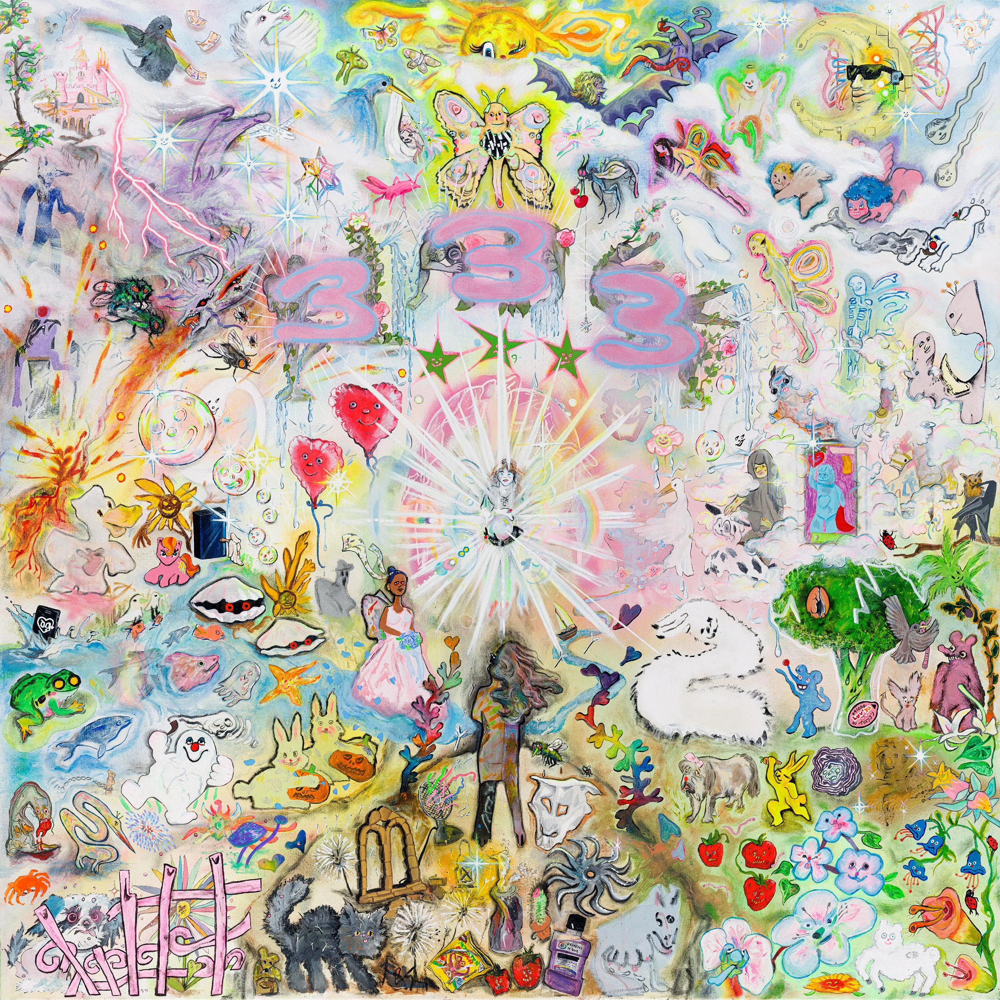

333 is the fourth studio album by Swedish rapper Bladee. It was released on July 16, 2020, by YEAR0001, making it Bladee's second release of 2020, following April's Exeter. 333 is notable among Bladee's discography in featuring no collaborations from fellow Drain Gang members Thaiboy Digital and Ecco2K.
1. "Wings in Motion" (Reichwald, Rosenberg, Joakim Benon) 2:24
2. "Don't Worry" 2:19
3. "Keys to the City" 2:27
4. "Hero of My Story 3style3" 1:59
5. "100s" 2:27
6. "Mean Girls" 2:27
7. "Innocent of All Things" 2:09
8. "Reality Surf" (Reichwald, Rosenberg, Carl-Mikael Berlander) 2:04
9. "Noblest Strive" (Reichwald, Rosenberg, Timur Tokdemir) 2:15
10. "It Girl" 2:16
11. "Oh Well" (Reichwald, Rosenberg, Luis Cano) 2:28
12. "Valerie" 2:40
13. "Finder" 1:44
14. "Extasia" 2:21
15. "Only One" (Reichwald, Rosenberg, Benon) 2:29
16. "Swan Lake" 2:57
Total length: 37:26